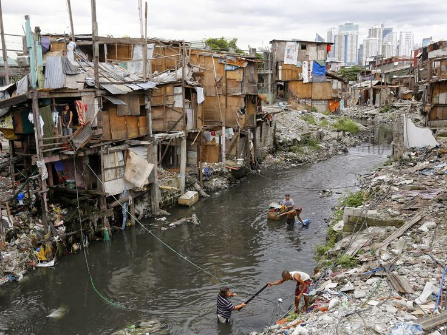

Poverty in the Visayas region remains a critical issue in the Philippines, despite economic growth in recent years.
According to the Philippine Statistics Authority (PSA, 2023), poverty incidence in the Visayas is higher compared to Luzon, with significant disparities among its islands.
This article examines the factors contributing to poverty in the Visayas and discusses efforts to address these challenges.
The Visayas region relies heavily on agriculture and fisheries, industries vulnerable to natural disasters and climate change.
Typhoons frequently damage crops and infrastructure, reducing income and productivity for small-scale farmers and fisherfolk (World Bank, 2021).
The limited diversification of industries in the region further restricts employment opportunities. Many areas in the
Visayas suffer from inadequate infrastructure, such as poor road networks and limited access to electricity.
These issues hinder economic activities and discourage investment in rural areas (Asian Development Bank, 2022).
Poor transportation systems also limit market access for agricultural products, reducing income for farmers.
Access to quality education remains unequal, particularly in remote islands. According to PSA (2023), many children drop out of school to support their families, contributing to a cycle of poverty.
The lack of vocational training programs limits opportunities for skilled employment, leading to higher rates of underemployment and informal work.
Malnutrition and limited healthcare access are prevalent in poor communities across the Visayas.
Inadequate healthcare infrastructure and insufficient government funding exacerbate these problems.
Malnourished children face developmental challenges, which negatively impact their education and future economic prospects (UNICEF Philippines, 2022).
Efforts to combat poverty in the Visayas include conditional cash transfer programs like

the Pantawid Pamilyang Pilipino Program (4Ps) and community-based projects funded by local and international NGOs.
However, challenges such as corruption and inefficient program implementation reduce the effectiveness of these interventions (Department of Social Welfare and Development, 2023).
Addressing poverty in the Visayas requires a multi-faceted approach, including improving infrastructure, enhancing education and vocational training, and strengthening disaster resilience.
Policymakers must focus on sustainable development and equitable resource allocation to reduce poverty levels in the region.
Addressing poverty in the Visayas requires multi-faceted approach including improving infrastructure, enhancing education and vocational training, and strengthening disaster resilience.
Policymakers must focus on sustainable development and equitable resource allocation to reduce poverty levels in the region.